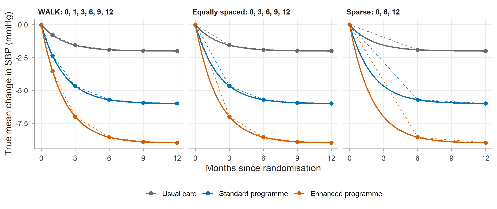
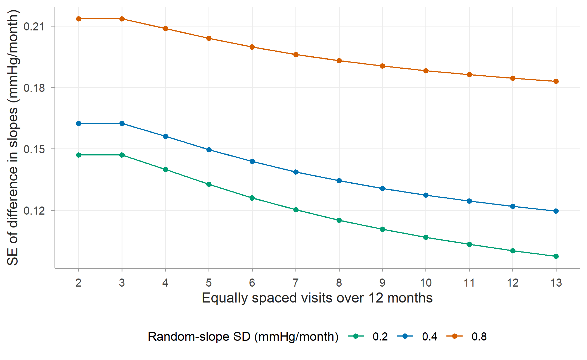
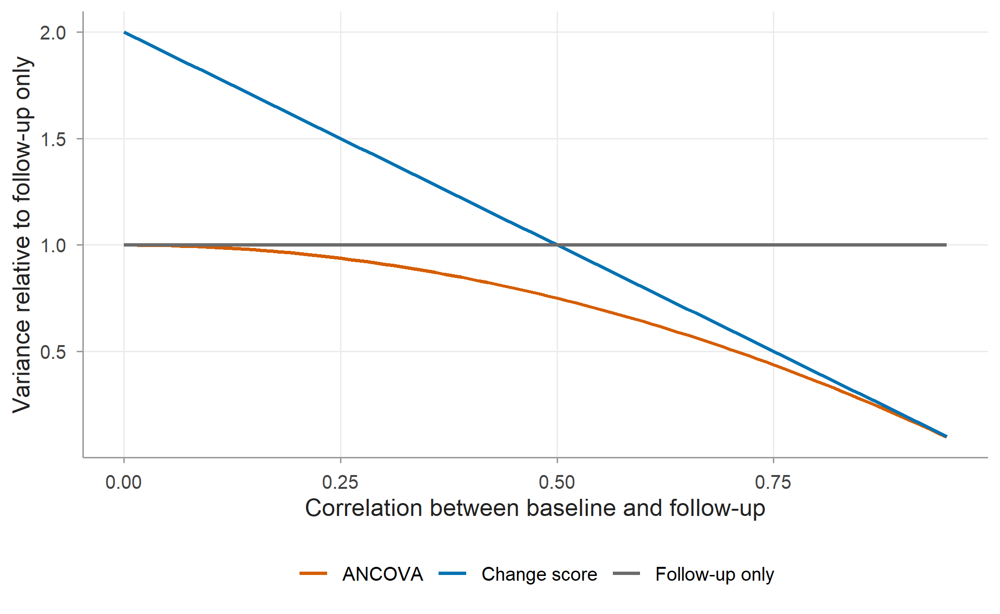
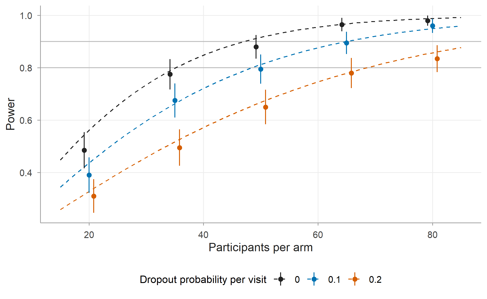
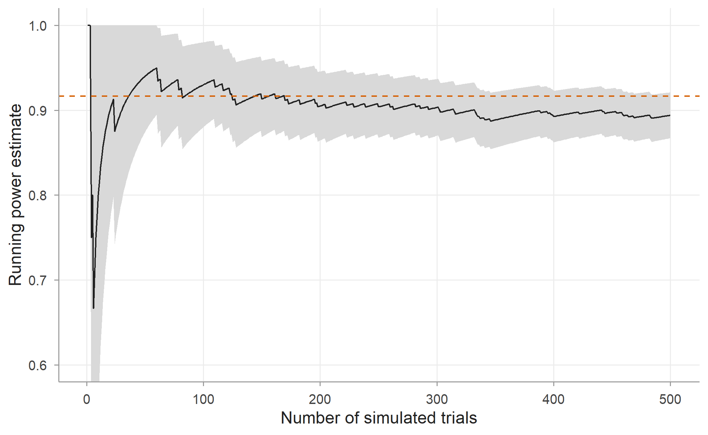

source(here::here("R", "setup.R"))
walk <- load_walk()
# Slow simulations are run once by scripts/12_planning.R and cached in
# outputs/models/. If a cache is missing it is recomputed with the same seed.
cache_or_run <- function(name, expr) {
f <- here("outputs", "models", paste0(name, ".rds"))
if (file.exists(f)) return(readRDS(f))
x <- expr
save_model(x, name)
x
}12 Study planning, reporting and reproducibility
The best time to think about the analysis of a longitudinal study is before the first participant is measured. How often to measure, for how long, and on how many people determines what can be estimated and how precisely, and no analysis can recover information that the design did not collect. Planning also includes writing down the analysis before the data arrive, so that the results can be trusted; reporting it completely, so that readers can judge it; and organising the computation so that anyone, including you in two years, can reproduce it. This module covers all four. The statistical core is a pair of tools for predicting precision: a closed-form formula for the variance of a slope in a balanced design, which shows how each design choice matters, and simulation, which handles the realistic complications (dropout, unequal times, complex models) that formulas cannot.
Learning outcomes
By the end of this module participants will be able to:
- 12.1 Choose measurement occasions and follow-up schedules for a stated research question.
- 12.2 Explain how correlation, effect size, dropout and the number of subjects affect precision.
- 12.3 Estimate power and sample size by simulation, and report the Monte Carlo error.
- 12.4 Write a longitudinal statistical analysis plan.
- 12.5 Report model specifications, assumptions, missing-data handling and results completely and transparently.
- 12.6 Organise a reproducible R project with relative paths, numbered scripts and recorded package versions.
Prerequisites
Module 1 (estimands for change, within-subject correlation), Module 3 (change scores and ANCOVA), Module 4 (random intercepts and slopes), Module 10 (dropout and MAR) and Module 11 (diagnostics and the analysis log).
WarningSimulated data
All examples use simulated data from fictional studies. Results illustrate methods; they are not empirical findings.
NoteCached computations
The power simulations in this module need about 3,500 model fits and take roughly 10 minutes. scripts/12_planning.R runs them once and saves the results in outputs/models/m12_power_grid.rds and outputs/models/m12_slope_sims.rds. These notes read the saved files; if they are missing, the same code runs here with the same seeds and gives identical results.
# Design parameters: the defaults of sim_two_arm() in R/sim_helpers.R
pars <- list(delta = -0.5, sd_int = 11, sd_slope = 0.4, cor_int_slope = -0.2,
sd_resid = 6, times = c(0, 3, 6, 9, 12))
s_tt <- function(times) sum((times - mean(times))^2)
var_slope_diff <- function(n_per_arm, times, sd_slope, sd_resid) {
2 * (sd_slope^2 + sd_resid^2 / s_tt(times)) / n_per_arm
}
power_formula <- function(n_per_arm, times = pars$times, delta = pars$delta,
sd_slope = pars$sd_slope, sd_resid = pars$sd_resid,
alpha = 0.05) {
se <- sqrt(var_slope_diff(n_per_arm, times, sd_slope, sd_resid))
pnorm(abs(delta) / se - qnorm(1 - alpha / 2))
}
n_formula <- function(power = 0.9, times = pars$times, delta = pars$delta,
sd_slope = pars$sd_slope, sd_resid = pars$sd_resid,
alpha = 0.05) {
ceiling(2 * (qnorm(1 - alpha / 2) + qnorm(power))^2 *
(sd_slope^2 + sd_resid^2 / s_tt(times)) / delta^2)
}12.1 Start from the estimand
Every design decision follows from the research question and its estimand. Module 1 distinguished three kinds of question: about change (how does SBP change over a year?), about group differences in change (does the enhanced programme reduce SBP more than usual care?), and about individual trajectories (how much do participants differ in their rate of change?). They need different designs.
- A difference in mean change at a fixed time (the WALK primary estimand at month 12) needs good measurement at baseline and at that time. Intermediate visits add precision through the correlation and help under dropout, but the two end points carry most of the information.
- A difference in rates of change (slopes) is estimated most precisely when measurements are spread far apart in time, ideally clustered at the beginning and end of follow-up, provided change is linear.
- The shape of change (when the effect appears, whether it plateaus or wanes) needs measurements where the curve bends. If change is expected to be early, visits should be front-loaded.
- Individual differences in change (the random-slope variance \(\tau_1^2\)) need enough measurements per participant, spread widely, to separate true slope differences from residual noise.
The ICH E9(R1) addendum (International Council for Harmonisation of Technical Requirements for Pharmaceuticals for Human Use (ICH) 2019) makes the estimand explicit through five attributes: the treatment conditions, the population, the variable (endpoint), the handling of intercurrent events, and the population-level summary. Intercurrent events, such as stopping the programme or starting a new medication, have direct consequences for design: if the estimand uses the treatment-policy strategy, outcomes must be collected after such events, so the protocol must keep following participants who stop the programme.
12.2 Choosing measurement occasions
In WALK the programmes act quickly. The simulated truth (known only because the data are simulated) is that the mean change in each arm follows \(-A_k\{1 - \exp(-t/2)\}\), so 39% of the eventual change has happened by month 1 and 78% by month 3. Figure 12.1 shows what three schedules of the same 12-month study would see.
truth <- readRDS(here("data", "walk_truth.rds"))
curve <- expand.grid(month = round(seq(0, 12, by = 0.1), 1),
arm = c("UC", "SP", "EP")) |>
mutate(change = -truth$A[as.character(arm)] * (1 - exp(-month / truth$tau)),
arm = factor(arm, levels = c("UC", "SP", "EP")))
schedules <- list("WALK: 0, 1, 3, 6, 9, 12" = c(0, 1, 3, 6, 9, 12),
"Equally spaced: 0, 3, 6, 9, 12" = c(0, 3, 6, 9, 12),
"Sparse: 0, 6, 12" = c(0, 6, 12))
sched_pts <- bind_rows(lapply(names(schedules), function(s)
data.frame(schedule = s, month = schedules[[s]]))) |>
mutate(schedule = factor(schedule, levels = names(schedules))) |>
inner_join(curve, by = "month", relationship = "many-to-many")
ggplot(curve, aes(month, change, colour = arm)) +
geom_line(linewidth = 0.8) +
geom_point(data = sched_pts, size = 2) +
geom_line(data = sched_pts, linetype = 2, linewidth = 0.4) +
facet_wrap(~schedule) +
scale_colour_arm(name = NULL, labels = walk_arm_labels) +
scale_x_continuous(breaks = c(0, 3, 6, 9, 12)) +
labs(x = "Months since randomisation", y = "True mean change in SBP (mmHg)")
The sparse schedule estimates the month-12 change just as well as the others, but it would suggest a gradual decline over the first six months when in fact almost all the change happens in the first three. If the study must also answer “how quickly does the programme work?”, or if participants are expected to drop out early, the early visits are essential. WALK’s schedule front-loads visits at months 1 and 3 for this reason and spaces them out later, when little is changing. The cost of front-loading is small for the month-12 estimand and, as the next section shows, slightly reduces precision for a linear slope compared with visits concentrated at the two ends.
Other considerations matter as much as statistics. Visits cost money and burden participants, and burden increases dropout. Visit windows (the acceptable range of actual times around each scheduled visit) must be wide enough to be achievable and narrow enough that a visit still measures the intended occasion. Baseline should be measured before randomisation, and if the outcome is noisy (as blood pressure is), averaging two baseline readings or two readings at the final visit reduces measurement error where it matters most. Finally, longer follow-up answers a different question (is the effect sustained?) rather than giving a more precise answer to the same one.
| Research question | Schedule implication |
|---|---|
| Difference in mean change at a fixed time | Precise baseline and final measurements; some intermediate visits for efficiency and to inform missing final values |
| Difference in linear rates of change | Spread measurements widely; extra measurements at the ends of follow-up are most informative if change is linear |
| When the effect appears; shape of change | Front-load visits where change is expected; enough visits to fit a curve |
| Variation between individuals in change | Several measurements per participant, spread over a long period |
| Durability of an effect | Long follow-up with visits after the expected plateau |
12.3 How design choices affect precision: the variance of a slope
12.3.1 The research question and estimand
We want to predict, before the study, how precisely a design will estimate the difference between two arms in the mean rate of change (the slope). The estimand is \(\Delta = \beta_3\), the difference in mean slopes in a two-arm trial, here with the planning value \(\Delta = -0.5\) mmHg/month.
12.3.2 Data structure and outcome types
A balanced design: \(n\) participants per arm, each measured at the same times \(t_1, \dots, t_J\), with a continuous outcome and no missing data. Dropout is added later.
12.3.3 Intuition
Imagine fitting a straight line to each participant’s data separately. Each participant’s estimated slope differs from the arm’s mean slope for two reasons: the participant’s true slope differs from the mean (variance \(\tau_1^2\)), and their measurements are noisy, so their fitted slope is uncertain (variance \(\sigma^2/S_{tt}\), as in simple linear regression). The arm’s mean slope is the average of these slopes, so its variance is their variance divided by \(n\). Spreading measurements out in time increases \(S_{tt}\) and shrinks the second term; nothing about the design except the number of participants shrinks the first.
12.3.4 The model
The data-generating model is the random intercept and slope model used by sim_two_arm():
\[ y_{ij} = \beta_0 + \beta_1 t_j + \beta_3\,\text{Active}_i\, t_j + b_{0i} + b_{1i} t_j + \varepsilon_{ij}, \qquad \text{Var}(b_{1i}) = \tau_1^2,\quad \text{Var}(\varepsilon_{ij}) = \sigma^2, \]
where \(t_j\) is the time of occasion \(j\) (the same for everyone), \(\text{Active}_i\) indicates the active arm, and \(b_{0i}\) and \(b_{1i}\) are the random intercept and slope. (In sim_two_arm() there is no arm main effect, because arms are randomised; including one changes nothing below.) In a balanced, complete design, the generalized least squares estimate of \(\beta_3\) is the difference between the arm averages of the participants’ ordinary least squares slopes, which gives
\[ \text{Var}(\hat\beta_3) = \frac{2}{n}\left(\tau_1^2 + \frac{\sigma^2}{S_{tt}}\right), \qquad S_{tt} = \sum_{j=1}^J (t_j - \bar t)^2 , \]
with \(n\) participants per arm and \(\bar t\) the mean of the measurement times (Diggle et al. 2002; Fitzmaurice et al. 2011). Notice what does not appear: the random-intercept variance \(\tau_0^2\) and the intercept-slope covariance \(\tau_{01}\). Between-participant differences in level do not affect the precision of a slope comparison in a balanced design, because each participant serves as their own control. Setting the power equation \(|\Delta|/\sqrt{\text{Var}(\hat\beta_3)} = z_{1-\alpha/2} + z_{1-\gamma}\) (for power \(1-\gamma\)) and solving for \(n\) gives the sample size per arm
\[ n = \frac{2\,(z_{1-\alpha/2} + z_{1-\gamma})^2 \,(\tau_1^2 + \sigma^2/S_{tt})}{\Delta^2}. \]
12.3.5 Assumptions and limitations
The formula assumes linear change, the same times for everyone, no missing data, independent residual errors with constant variance, and a large enough sample for the normal approximation. Serial correlation in the residuals reduces the information gained from closely spaced visits. Dropout reduces information, and unequal times break the simple structure. These are the reasons for simulation in the next section. The planning values (\(\tau_1\), \(\sigma\), \(\Delta\)) are themselves uncertain; they usually come from pilot studies or published trials, and a sample size calculation should show how \(n\) changes over a plausible range.
12.3.6 Fitting the model in R
The formula is one line of R (var_slope_diff() in the setup chunk). We compute it for several schedules over the same 12 months, using the planning values \(\tau_1 = 0.4\) mmHg/month and \(\sigma = 6\) mmHg.
design_times <- list("0, 12" = c(0, 12), "0, 6, 12" = c(0, 6, 12),
"0, 3, 6, 9, 12" = c(0, 3, 6, 9, 12),
"0, 1, 3, 6, 9, 12 (WALK)" = c(0, 1, 3, 6, 9, 12),
"0, 2, ..., 12 (7 visits)" = seq(0, 12, 2),
"0, 0.5, ..., 12 (25 visits)" = seq(0, 12, 0.5),
"0, 1, 2, 10, 11, 12" = c(0, 1, 2, 10, 11, 12))
design_tab <- data.frame(
schedule = names(design_times),
n_visits = lengths(design_times),
S_tt = vapply(design_times, s_tt, 0),
var_subject_slope = vapply(design_times, function(t)
pars$sd_slope^2 + pars$sd_resid^2 / s_tt(t), 0),
se_n50 = vapply(design_times, function(t)
sqrt(var_slope_diff(50, t, pars$sd_slope, pars$sd_resid)), 0),
n_per_arm_90 = vapply(design_times, function(t) n_formula(0.9, times = t), 0))
rownames(design_tab) <- NULL
design_tab#> schedule n_visits S_tt var_subject_slope se_n50
#> 1 0, 12 2 72.0 0.6600 0.1625
#> 2 0, 6, 12 3 72.0 0.6600 0.1625
#> 3 0, 3, 6, 9, 12 5 90.0 0.5600 0.1497
#> 4 0, 1, 3, 6, 9, 12 (WALK) 6 110.8 0.4848 0.1393
#> 5 0, 2, ..., 12 (7 visits) 7 112.0 0.4814 0.1388
#> 6 0, 0.5, ..., 12 (25 visits) 25 325.0 0.2708 0.1041
#> 7 0, 1, 2, 10, 11, 12 6 154.0 0.3938 0.1255
#> n_per_arm_90
#> 1 56
#> 2 56
#> 3 48
#> 4 41
#> 5 41
#> 6 23
#> 7 3412.3.7 Interpreting the output
| Column | Meaning | Example (equally spaced, 5 visits) |
|---|---|---|
S_tt |
Spread of the measurement times | 90 |
var_subject_slope |
\(\tau_1^2 + \sigma^2/S_{tt}\): variance of one participant’s slope estimate around the arm mean | 0.56 |
se_n50 |
SE of the difference in mean slopes with 50 per arm | 0.15 mmHg/month |
n_per_arm_90 |
Participants per arm for 90% power at two-sided 5% | 48 |
Three lessons follow. First, the schedules 0, 12 and 0, 6, 12 give exactly the same precision for a linear slope (both have \(S_{tt} = 72\)): a midpoint measurement adds nothing to the slope, although it does allow non-linearity to be detected. Second, more visits help with diminishing returns. Going from 5 to 25 equally spaced visits reduces the required sample size from 48 to 23 per arm, but each further visit buys less because \(\tau_1^2 = 0.16\) stays and soon dominates \(\sigma^2/S_{tt}\). Third, where the visits are placed matters as much as how many there are: six visits concentrated at the ends (0, 1, 2, 10, 11, 12, \(S_{tt} = 154\)) need 34 per arm, while WALK’s front-loaded six visits (\(S_{tt} = 110.8\)) need 41. That is the price of front-loading for a linear slope, and it is worth paying when change is not linear, as in WALK.
Figure 12.2 shows the diminishing returns directly, for three values of the random-slope SD.
visits_curve <- expand.grid(n_visits = 2:13, sd_slope = c(0.2, 0.4, 0.8)) |>
mutate(S = vapply(n_visits, function(k) s_tt(seq(0, 12, length.out = k)), 0),
se = sqrt(2 * (sd_slope^2 + pars$sd_resid^2 / S) / 50),
sd_slope = factor(sd_slope))
ggplot(visits_curve, aes(n_visits, se, colour = sd_slope)) +
geom_line() + geom_point(size = 1.5) +
scale_colour_manual(values = c("0.2" = "#009E73", "0.4" = "#0072B2",
"0.8" = "#D55E00"),
name = "Random-slope SD (mmHg/month)") +
scale_x_continuous(breaks = 2:13) +
labs(x = "Equally spaced visits over 12 months",
y = "SE of difference in slopes (mmHg/month)")
When participants differ a lot in their rates of change (large \(\tau_1\)), adding visits barely helps and only more participants will do. When \(\tau_1\) is small, additional visits are worth more.
12.3.8 Checking the model
Does the formula agree with what actually happens when a mixed model is fitted to simulated data? We simulate 500 trials with sim_two_arm() (50 per arm, visits at 0, 3, 6, 9 and 12 months, no dropout) and fit the random intercept and slope model to each.
slope_sims <- cache_or_run("m12_slope_sims", {
set.seed(1201)
bind_rows(lapply(1:500, function(i) {
d <- sim_two_arm(n_per_arm = 50)
m <- suppressMessages(lmer(y ~ time * trt + (time | id), data = d,
control = lmerControl(calc.derivs = FALSE)))
s <- coef(summary(m))["time:trt", ]
data.frame(sim = i, est = s[["Estimate"]], se = s[["Std. Error"]],
p = s[["Pr(>|t|)"]])
}))
})
se_formula <- sqrt(var_slope_diff(50, pars$times, pars$sd_slope, pars$sd_resid))
emp_sd <- sd(slope_sims$est)
mcse_emp_sd <- emp_sd / sqrt(2 * (nrow(slope_sims) - 1))
c(formula_se = se_formula, empirical_sd = emp_sd, mcse_of_sd = mcse_emp_sd,
mean_model_se = mean(slope_sims$se), mean_estimate = mean(slope_sims$est))#> formula_se empirical_sd mcse_of_sd mean_model_se mean_estimate
#> 0.149666 0.158618 0.005021 0.149032 -0.494350The formula gives an SE of 0.1497. The average model-based SE from the fitted mixed models is 0.149, essentially identical, and the average estimate is -0.494, close to the true \(-0.5\). The empirical SD of the 500 estimates is 0.1586, which is 1.8 Monte Carlo standard errors (MCSE 0.005) above the formula. A discrepancy of this size can arise by chance in 500 simulations, so the formula is confirmed to within simulation error; with more simulated trials the comparison would be sharper.
12.3.9 Correlation and a single follow-up
The same reasoning explains how within-subject correlation affects precision. Suppose the estimand is the difference in mean outcome at one follow-up time, with outcome variance \(\sigma_y^2\) at baseline and follow-up and correlation \(\rho\) between them. Three analyses are possible (Vickers and Altman 2001; Senn 2006):
\[ \text{Var}_{\text{follow-up}} \propto \sigma_y^2,\qquad \text{Var}_{\text{change}} \propto 2\sigma_y^2(1-\rho),\qquad \text{Var}_{\text{ANCOVA}} \propto \sigma_y^2(1-\rho^2). \]
Analysing change from baseline beats analysing the follow-up value only when \(\rho > 0.5\); ANCOVA, which adjusts the follow-up value for baseline, is always at least as precise as both (Figure 12.3). In WALK the observed correlation between baseline and month-12 SBP is 0.69, so ANCOVA needs about 53% of the sample size of a follow-up-only analysis. The mixed models used in this course for WALK, with baseline as an outcome, achieve precision close to ANCOVA in randomised trials.
rho_curve <- data.frame(rho = seq(0, 0.95, by = 0.01)) |>
mutate(`Follow-up only` = 1, `Change score` = 2 * (1 - rho),
ANCOVA = 1 - rho^2) |>
pivot_longer(-rho, names_to = "analysis", values_to = "rel_var")
ggplot(rho_curve, aes(rho, rel_var, colour = analysis)) +
geom_line(linewidth = 0.8) +
scale_colour_manual(values = c("Follow-up only" = "#6B6B6B",
"Change score" = "#0072B2",
ANCOVA = "#D55E00"), name = NULL) +
labs(x = "Correlation between baseline and follow-up",
y = "Variance relative to follow-up only")
The effect of correlation therefore depends on the comparison. Positive correlation helps within-subject comparisons (change, slopes) and hurts between-subject comparisons of averages over visits, exactly as Module 1 showed by simulation for standard errors.
12.3.10 Dropout
With monotone dropout, some participants contribute fewer visits and so less information about their slope. A participant seen at the first \(k\) visits contributes slope information \(w_k = 1/(\tau_1^2 + \sigma^2/S_{tt,k})\), where \(S_{tt,k}\) is computed from their \(k\) visit times, and a participant seen only at baseline contributes none. If \(\pi_k\) is the probability of being seen at exactly the first \(k\) visits, then approximately
\[ \text{Var}(\hat\beta_3) \approx \frac{2}{n \sum_k \pi_k w_k}. \]
This ignores the small amount of information that flows through the correlation between intercepts and slopes, so it is an approximation, and it assumes that dropout is unrelated to the outcome (MCAR). In sim_two_arm() each participant drops out before each post-baseline visit with probability \(p\), so \(\pi_k = p(1-p)^{k-1}\) for \(k < J\) and \(\pi_J = (1-p)^{J-1}\).
power_formula_dropout <- function(n_per_arm, dropout, times = pars$times,
delta = pars$delta, sd_slope = pars$sd_slope,
sd_resid = pars$sd_resid, alpha = 0.05) {
J <- length(times)
pk <- if (dropout == 0) c(rep(0, J - 1), 1) else
c(dropout * (1 - dropout)^(0:(J - 2)), (1 - dropout)^(J - 1))
info <- vapply(seq_len(J), function(k) if (k < 2) 0 else
1 / (sd_slope^2 + sd_resid^2 / s_tt(times[1:k])), 0)
se <- sqrt(2 / (n_per_arm * sum(pk * info)))
pnorm(abs(delta) / se - qnorm(1 - alpha / 2))
}
sapply(c(0, 0.1, 0.2), function(p) power_formula_dropout(50, p))#> [1] 0.9163 0.8122 0.6679With 50 participants per arm, the approximate power falls from 0.92 without dropout to 0.81 and 0.67 with per-visit dropout probabilities of 0.1 and 0.2 (that is, 34% and 59% of participants lost before the final visit). A common shortcut, inflating \(n\) by \(1/(1 - \text{proportion lost})\), treats dropouts as contributing nothing; a mixed model uses their early visits, so the shortcut is conservative for slopes.
12.3.11 Reporting
TipReporting example
The sample size was based on the difference in mean rates of change in SBP between arms. Assuming visits at 0, 3, 6, 9 and 12 months, a random-slope SD of 0.4 mmHg/month and a residual SD of 6 mmHg (from pilot data), the variance of the estimated difference in slopes is \(2(\tau_1^2 + \sigma^2/S_{tt})/n\) with \(S_{tt} = 90\). To detect a difference of 0.5 mmHg/month with 90% power at a two-sided 5% significance level requires 48 participants per arm with complete data. The effect of dropout was assessed by simulation (see below).
12.3.12 Common mistakes
ImportantCommon mistakes
- Using a cross-sectional sample-size formula for a longitudinal estimand, ignoring the correlation and the number of visits.
- Adding visits to rescue a study with too few participants. When participants vary in their slopes, only more participants reduce \(\tau_1^2/n\).
- Taking planning values at face value. Show how \(n\) changes over plausible values of \(\tau_1\), \(\sigma\) and \(\Delta\).
- Planning for a slope when the estimand is change at a fixed time (or the reverse). The formula must match the primary analysis.
- Inflating for dropout as if dropouts contribute nothing without saying so, or ignoring dropout entirely.
12.4 Simulation-based power and sample size
12.4.1 The research question and estimand
How many participants per arm are needed for a given power to detect the difference in mean slopes, when participants drop out and the analysis is a mixed model? We also want to know how precise the simulation’s own answer is.
12.4.2 Data structure and outcome types
Simulated two-arm trials from sim_two_arm() with visits at 0, 3, 6, 9 and 12 months, 20 to 80 participants per arm, and monotone dropout with probability 0, 0.1 or 0.2 before each post-baseline visit. The outcome is continuous.
12.4.3 Intuition
Power is the probability that the planned analysis rejects the null hypothesis when the planning alternative is true. If we can simulate the trial and run the analysis, we can estimate that probability by doing it many times and counting rejections. Simulation can include anything we can program (dropout, irregular times, the exact model of the primary analysis, a different analysis method), so it is the most flexible planning tool (Arnold et al. 2011). Its answers are estimates, with Monte Carlo error that must be reported (Morris et al. 2019).
12.4.4 The model
For each scenario we generate \(n_{\text{sim}}\) datasets, fit the analysis model, and record whether \(p < \alpha\) for the time-by-arm interaction. The power estimate and its Monte Carlo standard error are
\[ \widehat{\text{power}} = \frac{1}{n_{\text{sim}}}\sum_{s=1}^{n_{\text{sim}}} \mathbb{1}(p_s < \alpha), \qquad \text{MCSE} = \sqrt{\frac{\widehat{\text{power}}(1-\widehat{\text{power}})}{n_{\text{sim}}}} . \]
The MCSE is largest when power is near 0.5. To estimate a power near 0.8 with MCSE no larger than 0.01 needs \(n_{\text{sim}} = 0.8 \times 0.2 / 0.01^2 = 1600\) simulated trials; with 200, the MCSE is about 0.028. Morris et al. (2019) recommend planning every simulation study through its aims, data-generating mechanisms, estimands, methods and performance measures, and choosing \(n_{\text{sim}}\) from the MCSE you need.
12.4.5 Assumptions and limitations
The simulated power is only as good as the data-generating model and its planning values. sim_two_arm() assumes linear trajectories, normal random effects and residuals, and dropout that is completely at random (MCAR). If dropout in the real study depends on the outcome, power and bias will both differ. Simulations are slow when each fit takes time, which is why the results here are cached. The power_two_arm() helper fits the model with lmerTest and uses the Satterthwaite t-test, which is the planned analysis; the formula above uses the normal approximation, so the two can differ slightly in small samples.
12.4.6 Fitting the model in R
power_two_arm() (in R/sim_helpers.R) wraps the simulation: it calls sim_two_arm() n_sims times with the arguments you pass, fits the mixed model, and returns the power, its MCSE and the number of simulations. One scenario looks like this (not run here; it takes about 30 seconds):
power_two_arm(n_sims = 200, seed = 1, n_per_arm = 50, dropout = 0.1)The grid of 15 scenarios with 200 simulated trials each is run in scripts/12_planning.R:
grid <- expand.grid(n_per_arm = c(20, 35, 50, 65, 80),
dropout = c(0, 0.1, 0.2))
power_grid <- cache_or_run("m12_power_grid", {
bind_rows(lapply(seq_len(nrow(grid)), function(k) {
pw <- power_two_arm(n_sims = 200, seed = 1200 + k,
n_per_arm = grid$n_per_arm[k],
dropout = grid$dropout[k])
data.frame(grid[k, ], power = pw[["power"]], mcse = pw[["mcse"]],
n_sims = pw[["n_sims"]])
}))
})
power_grid <- power_grid |>
mutate(formula = mapply(power_formula_dropout, n_per_arm, dropout),
lower = pmax(0, power - 1.96 * mcse),
upper = pmin(1, power + 1.96 * mcse))
power_grid#> n_per_arm dropout power mcse n_sims formula lower upper
#> 1 20 0.0 0.485 0.035339 200 0.5608 0.4157 0.5543
#> 2 35 0.0 0.775 0.029528 200 0.7982 0.7171 0.8329
#> 3 50 0.0 0.880 0.022978 200 0.9163 0.8350 0.9250
#> 4 65 0.0 0.965 0.012995 200 0.9678 0.9395 0.9905
#> 5 80 0.0 0.980 0.009899 200 0.9883 0.9606 0.9994
#> 6 20 0.1 0.390 0.034489 200 0.4365 0.3224 0.4576
#> 7 35 0.1 0.675 0.033119 200 0.6632 0.6101 0.7399
#> 8 50 0.1 0.795 0.028546 200 0.8122 0.7390 0.8510
#> 9 65 0.1 0.895 0.021677 200 0.9006 0.8525 0.9375
#> 10 80 0.1 0.960 0.013856 200 0.9495 0.9328 0.9872
#> 11 20 0.2 0.310 0.032703 200 0.3278 0.2459 0.3741
#> 12 35 0.2 0.495 0.035354 200 0.5171 0.4257 0.5643
#> 13 50 0.2 0.650 0.033727 200 0.6679 0.5839 0.7161
#> 14 65 0.2 0.780 0.029292 200 0.7792 0.7226 0.8374
#> 15 80 0.2 0.835 0.026246 200 0.8573 0.7836 0.886412.4.7 Interpreting the output
formula_lines <- expand.grid(n_per_arm = 15:150, dropout = c(0, 0.1, 0.2)) |>
mutate(formula = mapply(power_formula_dropout, n_per_arm, dropout))
ggplot(power_grid, aes(n_per_arm, power, colour = factor(dropout))) +
geom_hline(yintercept = c(0.8, 0.9), colour = "grey75") +
geom_line(data = filter(formula_lines, n_per_arm <= 85), aes(y = formula),
linetype = 2, linewidth = 0.5) +
geom_pointrange(aes(ymin = lower, ymax = upper),
position = position_dodge(width = 2.5), size = 0.3) +
scale_colour_manual(values = c("0" = "#222222", "0.1" = "#0072B2",
"0.2" = "#D55E00"),
name = "Dropout probability per visit") +
labs(x = "Participants per arm", y = "Power")
| Output | What it means | Example: 50 per arm, dropout 0.1 |
|---|---|---|
power |
Proportion of simulated trials with \(p < 0.05\) | 0.795 |
mcse |
Monte Carlo SE of that proportion | 0.029 |
lower, upper |
95% Monte Carlo interval for the true power | 0.74 to 0.85 |
formula |
Approximate analytic power | 0.812 |
Power rises steeply with the number of participants and falls with dropout. With 50 per arm the simulated power is 0.88 without dropout, 0.80 with dropout probability 0.1 per visit and 0.65 with 0.2. The formula curves pass through or close to the Monte Carlo intervals: the largest difference between simulated and formula power is 2.1 MCSEs. Reading the formula curves, 80% power needs about 36, 49 and 69 participants per arm for the three dropout scenarios, and 90% power about 48, 65 and 92. In practice one would confirm the chosen \(n\) with a larger simulation at that single design point.
The Monte Carlo error itself deserves attention. Figure 12.5 shows the running power estimate from the 500 stored trials at 50 per arm without dropout.
mc_running <- slope_sims |>
mutate(reject = p < 0.05, n_sims = seq_along(reject),
power = cumsum(reject) / n_sims,
mcse = sqrt(power * (1 - power) / n_sims))
ggplot(mc_running, aes(n_sims, power)) +
geom_ribbon(aes(ymin = pmax(0, power - 1.96 * mcse),
ymax = pmin(1, power + 1.96 * mcse)), fill = "grey85") +
geom_line() +
geom_hline(yintercept = power_formula(50), linetype = 2, colour = "#D55E00") +
coord_cartesian(ylim = c(0.6, 1)) +
labs(x = "Number of simulated trials", y = "Running power estimate")
After 50 simulated trials the interval is wide (MCSE 0.034); after 500 the estimate is 0.894 with MCSE 0.014, against a formula value of 0.916. A power estimate reported without its MCSE cannot be judged.
12.4.8 Checking the model
Before trusting a power simulation, check that the simulation does what you intend. Simulate one large dataset and confirm that the fitted model recovers the planning values; run the simulation with \(\Delta = 0\) and confirm that the rejection rate is close to \(\alpha\) (the type I error); and check that the number of failed or singular fits is small and recorded. Compare with a formula wherever one exists, as here.
12.4.9 Reporting
TipReporting example
Power was estimated by simulation (Arnold et al. 2011; Morris et al. 2019). Data were generated from a linear mixed model with random intercepts and slopes (SDs 11 mmHg and 0.4 mmHg/month, correlation −0.2), residual SD 6 mmHg, visits at 0, 3, 6, 9 and 12 months, a difference in mean slopes of -0.5 mmHg/month, and dropout before each post-baseline visit with probability 0.1 (completely at random). Each simulated trial was analysed with the planned model (lme4/lmerTest, Satterthwaite t-test). With 65 participants per arm, the estimated power from 200 simulated trials was 0.895 (Monte Carlo SE 0.022). The code is in scripts/12_planning.R.
12.4.10 Common mistakes
ImportantCommon mistakes
- Reporting simulated power without its Monte Carlo SE, or choosing \(n_{\text{sim}}\) without considering the precision needed.
- Simulating from one model and analysing with another without saying so. The analysis in the simulation should be the planned analysis.
- Forgetting to set and record the seed. The simulation must be reproducible.
- Treating MCAR dropout in the simulation as realistic when dropout is likely to depend on the outcome.
- Not checking type I error under the null.
12.5 Writing a longitudinal statistical analysis plan
A statistical analysis plan (SAP) is a detailed, dated description of the analysis, written before the data that bear on the main comparison have been seen. It protects against the many small, data-driven choices described in Module 11, makes the analysis reproducible, and tells reviewers what was planned. Gamble et al. (2017) give consensus guidance on the content of SAPs for clinical trials, and the ICH E9(R1) addendum (International Council for Harmonisation of Technical Requirements for Pharmaceuticals for Human Use (ICH) 2019) sets out the estimand framework that a modern SAP uses.
The course provides a complete template, final-project/sap_template.md, and a filled example for WALK, admin/templates/walk_sap_example.md. The template follows the section structure of Gamble et al.: administrative information and version history; introduction and objectives; study methods (design, randomisation, sample size, interim analyses, timing); statistical principles (confidence intervals, multiplicity, analysis populations); the trial population; the analysis itself; and reporting. It adds the items that longitudinal analyses need:
- the schedule of measurement occasions and visit windows, and how out-of-window measurements are handled;
- the time scale (scheduled or actual time, or both, as in the WALK primary model);
- the estimand with all five ICH E9(R1) attributes, including the strategy for each intercurrent event, and an explicit statement of whether the summary is conditional (subject-specific) or marginal (population-average);
- the full model specification: mean model, random effects and/or residual correlation, distribution and link, estimation method and degrees-of-freedom method, and how the estimand is computed from the model;
- the pre-specified response to diagnostic problems and fitting problems, in order (for example: rescale; compare optimisers; then remove the intercept-slope correlation; then the random slope);
- missing data: the assumption of the primary analysis, how the model uses incomplete data, and the sensitivity analyses with their purposes;
- reproducibility: software, package versions, and where the code is archived.
The primary estimand from the WALK example SAP shows the level of detail expected.
| Attribute | WALK |
|---|---|
| Treatment conditions | Assignment to EP (or SP) versus assignment to UC |
| Population | Adults with raised SBP meeting the trial eligibility criteria |
| Variable | Change in SBP from baseline to month 12 |
| Intercurrent events | Stopping programme attendance: treatment policy. Starting or changing antihypertensive medication: treatment policy (hypothetical strategy as a supplementary estimand) |
| Population-level summary | Difference in mean change (programme minus UC), mmHg |
The WALK SAP also states the sample size reasoning (a difference of 5 mmHg in mean change, SD of change about 10 mmHg, two comparisons at \(\alpha = 0.025\), 90% power, 15% loss, giving 120 per arm), the primary model in equation and R syntax, the rule for influential participants (check data and run a sensitivity analysis if one participant changes a contrast by more than half its SE; Module 11 found none), and a table of sensitivity analyses, each tied to the assumption it relaxes. Read it alongside the template; Independent exercise I2 in the workbook asks you to write the corresponding sections for the CLEAR trial.
ImportantCommon mistakes
- Writing the SAP after seeing the results, or changing it without a dated record.
- Describing the model in words only (“a mixed model was used”). Give the equation or the exact syntax.
- Omitting intercurrent events or mixing them up with missing data. Stopping treatment is an intercurrent event; a missed visit is missing data.
- Listing sensitivity analyses without saying what each one tests.
- No plan for fitting problems, so the response to a warning is decided after seeing what each option does to the effect.
12.6 Reporting longitudinal analyses
A report of a longitudinal analysis should let a reader reconstruct the model, judge its assumptions and see the main result with its uncertainty. The reporting checklist in Appendix A of final-project/sap_template.md organises this under design and data, estimand, model, assumptions and diagnostics, missing data, results and reproducibility. Most deficiencies in published longitudinal analyses are omissions: the covariance structure is not stated, the handling of time is unclear, the number of observations used is missing, or the missing-data assumption is not mentioned. Irregular visit times are a related problem that is often unreported (Pullenayegum and Lim 2016).
Here is a complete example for the WALK primary analysis, with every number computed from the model in this document.
m_pri <- lmer(sbp ~ visit_f * arm + (1 + month | id), data = walk,
control = lmer_ctrl)
emm <- emmeans(m_pri, ~ visit_f | arm)
chg <- contrast(emm, list(change12 = c(-1, 0, 0, 0, 0, 1)))
chg_tab <- summary(chg, infer = TRUE)
dic_tab <- summary(contrast(chg, method = "trt.vs.ctrl", by = NULL,
adjust = "none"), infer = TRUE)
vc <- as.data.frame(VarCorr(m_pri))
chg_tab#> arm = UC:
#> contrast estimate SE df lower.CL upper.CL t.ratio p.value
#> change12 -1.33 1.010 490 -3.32 0.665 -1.309 0.1912
#>
#> arm = SP:
#> contrast estimate SE df lower.CL upper.CL t.ratio p.value
#> change12 -6.70 0.997 476 -8.66 -4.744 -6.724 <0.0001
#>
#> arm = EP:
#> contrast estimate SE df lower.CL upper.CL t.ratio p.value
#> change12 -10.29 1.020 492 -12.30 -8.294 -10.109 <0.0001
#>
#> Degrees-of-freedom method: satterthwaite
#> Confidence level used: 0.95dic_tab#> contrast estimate SE df lower.CL upper.CL t.ratio
#> change12 SP - change12 UC -5.38 1.42 483 -8.17 -2.58 -3.782
#> change12 EP - change12 UC -8.97 1.44 491 -11.79 -6.15 -6.243
#> p.value
#> 0.0002
#> <0.0001
#>
#> Degrees-of-freedom method: satterthwaite
#> Confidence level used: 0.95
TipReporting example: statistical methods
SBP was analysed with a linear mixed-effects model including scheduled visit (months 0, 1, 3, 6, 9, 12) as a categorical variable, arm, and their interaction as fixed effects, and a random intercept and random slope on actual time since randomisation (months) for each participant, with an unstructured 2 × 2 covariance matrix and independent residual errors. Baseline SBP was included as an outcome. The model was fitted by restricted maximum likelihood with lme4 (Bates et al. 2015) and lmerTest (Kuznetsova et al. 2017) in R 4.6.1, with Satterthwaite degrees of freedom. The primary estimand was the difference between each programme and usual care in mean change in SBP from baseline to month 12 (treatment-policy strategy for stopping the programme), estimated as a contrast of estimated marginal means with emmeans (Lenth and Piaskowski 2026). All observed measurements were used; the analysis is valid if missing visits and dropout are missing at random given arm and the observed SBP history. Assumptions were checked with residual plots, influence analysis and random-effects plots (Module 11), and sensitivity to departures from MAR was assessed with delta-adjusted multiple imputation (Module 10).
TipReporting example: results
The analysis included 1897 measurements from all 360 randomised participants; 95, 100, 93 participants (UC, SP, EP) attended the month-12 visit. The estimated mean change in SBP from baseline to month 12 (95% confidence interval) was -1.3 (-3.3 to 0.7) mmHg in the usual care arm, -6.7 (-8.7 to -4.7) mmHg in the standard programme arm and -10.3 (-12.3 to -8.3) mmHg in the enhanced programme arm. The difference in mean change compared with usual care was -5.4 (-8.2 to -2.6) mmHg for the standard programme (p < 0.001) and -9.0 (-11.8 to -6.1) mmHg for the enhanced programme (p < 0.001). The between-participant SD of SBP at baseline was 12.4 mmHg, the SD of individual rates of change 0.54 mmHg/month, and the residual SD 5.6 mmHg. No participant changed the enhanced-versus-usual-care estimate by more than a small fraction of its standard error when omitted.
Because the data are simulated, we can compare these estimates with the truth, which is never possible in a real study: the true differences in mean change are −4.6 mmHg (SP) and −8.1 mmHg (EP), both inside the confidence intervals above.
A useful habit is to keep three levels of reporting apart. The main text gives the estimand, the model in a sentence or two, the main estimates with confidence intervals, and the key sensitivity analysis. The supplement gives the full model specification, variance components, all contrasts, diagnostic figures and all sensitivity analyses. The code and analysis log, archived and cited, give everything else.
ImportantCommon mistakes
- Reporting p-values without estimates and confidence intervals, or estimates without units.
- Not stating the covariance structure or the random effects.
- Reporting the number of participants but not the number of observations used, or not saying how many were seen at the primary time point.
- Presenting observed means as if they were model estimates. Under dropout they differ; say which is which.
- Calling a conditional (subject-specific) odds ratio a population effect for binary GLMMs (Module 8).
12.7 Reproducible R projects
A result is reproducible if someone else, given your data and code, obtains the same numbers. That requires three things: code that runs from start to finish without manual steps, paths that work on any computer, and the same versions of R and its packages. This course is itself organised as a reproducible project, and its layout is a good template.
LDA_course/
├── LDA_course.Rproj R project file: opening it sets the working directory
├── R/ shared functions, loaded by R/setup.R
├── data-raw/ scripts that create the data (fixed seeds)
├── data/ analysis datasets (never edited by hand)
├── scripts/ numbered analysis scripts: 00_make_data.R, 04_..., 11_..., 12_...
├── outputs/
│ ├── figures/ written by save_fig()
│ ├── tables/ written by save_table()
│ └── models/ written by save_model(); caches of slow computations
├── notes/, slides/, ... Quarto documents that source R/setup.R
└── admin/templates/ analysis log and SAP exampleProjects and relative paths. Opening LDA_course.Rproj in RStudio makes the project folder the working directory. Inside scripts and Quarto documents, here::here("data", "walk_long.csv") builds the path from the project root whatever the current working directory is (Quarto, for example, runs each document from its own folder). Never use setwd() or absolute paths such as C:/Users/...: they work on one computer only.
Numbered scripts and one-way data flow. Raw data are read, never edited. Scripts are numbered in the order they run, each script reads only inputs created by earlier steps, and each saves its outputs to outputs/. 00_make_data.R regenerates every dataset; 11_diagnostics.R and 12_planning.R regenerate everything in these two modules. A new analyst should be able to run the scripts in order and obtain every table and figure. Slow steps can be cached, as here, provided the cache is clearly labelled and can be deleted and rebuilt.
Record the environment. At the end of an analysis, save the output of sessionInfo() (R version, operating system, attached packages and versions):
si <- sessionInfo()
c(R = si$R.version$version.string,
lme4 = as.character(packageVersion("lme4")),
emmeans = as.character(packageVersion("emmeans")),
DHARMa = as.character(packageVersion("DHARMa")))#> R lme4
#> "R version 4.6.1 (2026-06-24 ucrt)" "2.1.0"
#> emmeans DHARMa
#> "2.0.3" "0.5.0"scripts/12_planning.R writes the full output to outputs/m12_session_info.txt. This records what was used but does not restore it.
Restore the environment with renv. The renv package (Ushey and Wickham 2026) gives each project its own package library and a lockfile, renv.lock, that lists the exact version and source of every package. The workflow has three commands:
renv::init()sets up a project library and createsrenv.lockfrom the packages the project uses (run once, at the start).renv::snapshot()updatesrenv.lockafter you install or update packages, so that the lockfile matches the library (run whenever packages change, and before sign-off).renv::restore()installs the versions recorded inrenv.lock(run by a collaborator, or by you on a new computer, to recreate the environment).
The lockfile is committed to version control with the code. The course project does not use renv itself, because participants install packages in different ways; for a real study it is strongly recommended.
Version control. Git records every change to the code and documents with a message, so you can see what changed, when, and why, and return to any earlier state. Commit small, coherent changes with informative messages; keep data files that contain personal information out of the repository (list them in .gitignore); and tag the commit that produced the reported results (for example git tag v1.0-primary-analysis). The analysis log (Module 11) then cites commits rather than vague descriptions, and a reviewer can check out exactly the code that produced the paper.
ImportantCommon mistakes
setwd()and absolute paths, which break on every other computer.- Editing data by hand in a spreadsheet, leaving no record. Make every change in code.
- Scripts that only run in a particular order known to the author, or that depend on objects left in the workspace. Restart R and run from the top before sign-off.
- Not recording package versions. Results from mixed models can change between package versions (for example optimiser defaults, or DHARMa’s default simulation settings, which changed in version 0.5.0).
- Committing the renv library instead of the lockfile, or forgetting
renv::snapshot()after updating packages.
Summary
Design comes first because it fixes what can be learned. The schedule should follow the estimand: front-load visits when change is early, as in WALK, and spread them widely when the target is a linear rate of change. The variance of a slope in a balanced design, \(2(\tau_1^2 + \sigma^2/S_{tt})/n\), shows why more participants beat more visits once individual differences in change dominate, why midpoints add nothing to a linear slope, and why between-participant differences in level do not matter for within-participant comparisons. Correlation helps change scores and ANCOVA, and dropout removes information that a mixed model partly recovers. Simulation extends these calculations to realistic designs; its power estimates are themselves estimates, and their Monte Carlo SE must be reported. The analysis is then fixed in a statistical analysis plan with a full estimand and model specification, reported against a checklist, and carried out in a project whose paths, scripts and package versions let anyone reproduce it.
Further reading
- Diggle et al. (2002), chapter on design considerations, including sample size for longitudinal studies.
- Morris et al. (2019) on planning, running and reporting simulation studies, including Monte Carlo standard errors.
- Arnold et al. (2011) on simulation-based power calculations for complex designs.
- Gamble et al. (2017) on the content of statistical analysis plans, and the ICH E9(R1) addendum (International Council for Harmonisation of Technical Requirements for Pharmaceuticals for Human Use (ICH) 2019) on estimands.
- Ushey and Wickham (2026), the renv documentation.
Exercises
Work through workbook/wb12-planning-reporting.qmd. Solutions are in answer-key/ak12-planning-reporting.qmd.